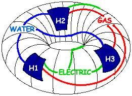

วิชาคณิต

จำนวนเฉพาะไม่ได้เป็นเพียงตัวเลขที่หารด้วย $1$ และตัวมันเองลงตัว แต่เป็นรากฐานสำคัญที่ปกป้องโลกดิจิทัลในปัจจุบัน เบื้องหลังระบบรักษาความปลอดภัยในการโอนเงินออนไลน์หรือการส่งข้อความส่วนตัวพึ่งพาการเข้ารหัสแบบ RSA ซึ่งใช้วิธีคูณจำนวนเฉพาะขนาดใหญ่มากๆ สองจำนวนเข้าด้วยกัน แม้การคูณตัวเลขจะทำได้เร็วในเสี้ยววินาที แต่การย้อนกระบวนการเพื่อหาว่าตัวเลขมหาศาลนั้นเกิดจากจำนวนเฉพาะสองตัวใดคูณกันกลับต้องใช้เวลาประมวลผลของซูเปอร์คอมพิวเตอร์นานหลายร้อยปี ความเหลื่อมล้ำทางคณิตศาสตร์นี้เองที่เป็นปราการเหล็กปกป้องข้อมูลสำคัญบนอินเทอร์เน็ต